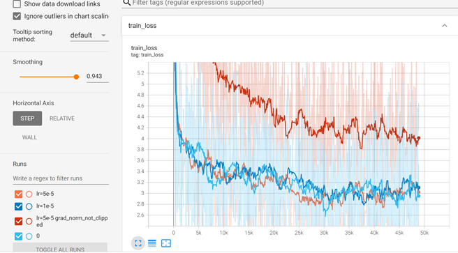
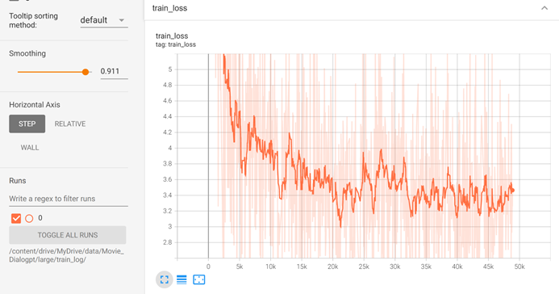
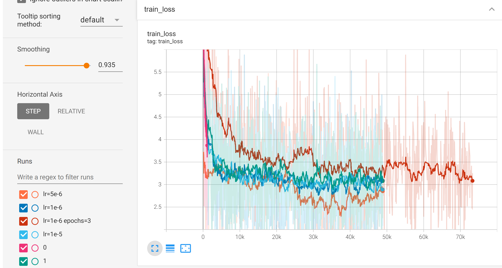

Analyze Reddit data with Azure
6 December 2022
Authors: Zidong Xu|
|
|
Focus on teenager related subbreddits:
- ☕ EDA (NLTK)
- ☕ NLP (Spark NLP)
-
☕ Machine Learning Pipelines (Spark ML)
Analyze relationships between variables using random forests and logistic regression.
Project Goals
For our project, we place our interests and efforts on the open-domain chatbots. We expect to build an open-domain chatbot with dramatic responses, which has the ability of 'chatting' with the user in an interesting and interactive way.
Our basic idea is first load the open-source pre-trained models of DialoGPT, which are from microsoft and trained primarily on twits and reddits. Then we finetune the model on the movie dialogue corpus, in the assumption that conversations in movies tend to be more dramatic and emotional, different from common conversations with more apparent features that is easy for us to build models, specifically tweets and reddits. We finally deploy the chatbots using google voice API. More technical details are provided in the following parts.
Tutorial
Exploratory data analysis

The Movie Dialogue Corpus contains a metadata-rich collection of fictional conversations extracted from raw movie scripts: movie-dialog-corpus-kaggle-link
This dataset only includes movies that had more than 5 IMDB (The Internet Movie Database; data interfaces available at http://www.imdb.com/interfaces) votes, which includes 220,579 conversational exchanges between 10,292 pairs of movie characters, 9,035 characters from 617 movies, and a totally of 304,713 utterances.
Natural language processing (Spark NLP)
Hardware Support for Training:
- ☕ To adjust the chatbot precisely so as to bring to the highest level of performance and effective, the hardware support we chose for training is Colab Pro+ with 800 compute units which cost us $80 per month.
- ☕ To ensure that we have enough cloud storage, we used Google One with 100 GB storage which cost us $2 per month.
- ☕ We used benchmarks of Intel Core i7-10750H with RAM 16GB which is one of the fastest laptop processors on the market.
Finetuning Time: (Epochs:2 Batch_size:4)
DialoGPT is a SOTA large-scale pretrained dialogue response generation model for nultiturn conversations.
In the human evaluation, we have used three DialoGPT with different size and compare the time of response generated from DialoGPT.
We waited around 35 minutes for DialoGPT-small (0.5 GB) to respond,
80 minutes for DialoGPT-medium (1.4 GB) to respond, 135 minutes for DialoGPT-large (2.9 GB) to respond.
Training Loss Visualization: (Screenshots of Tensorboard)
|

|

|

- We use the training loss as part of our standards for the hyper-parameter selection.
- We have trials of the small-size models to find a roughly appropriate range for the learning rate. We also test the trick of clipping gradient norms in this setting. According to the loss, it's better to clip the gradients.
- We give only one trial to the large-size model, considering the time and cost.
- We place our focus on the medium-size models. According to the loss plot, we can see that 2 epochs is enough. From these finetuning processes, we get different examples of models, which could be deployed later.
Machine Learning Pipelines (Spark ML)
We used Google Voice API to receive messages, autosave messages to gmail. Then processed unread messages every 5 seconds, using our models. Finally sent processed messages through our virtual number (+1 2028884948). All messages were processed in different sessions which are classified by sender numbers.
Since there were no extra machines nor rent any servers, we deployed our models just on Google Colab. Considering the price of google colab, it is not 24-hour deployed, only running when we want to make interactions with our chatbot.
Conclusions
Above is all about our NLP final project regarding building a chatbot. Although our SweetHeart chatbot interacts with us as what we've expected, more complex structures and more advanced techniques can be applied to our chatbot in the future.
There is a famous and instructive quote from Dr. Seuss:
The more that you read, the more things you will know.
The more that you learn, the more places you’ll go.
While our chatbot has learned from the movie conversations, it is expected that it can learn from daily conversations which have less features and interacted as real. We ourselves also need to keep learning from more papers and applications, in the hope to improve our lovely chatbot and build more interesting and elegant models in the future.
Future Work
There are still some goals we need to achieve in the future to improve the performance of our model. For the method we used this time, it simply shuffles the training dataset. It may perform much better if we try state-of-the-art planning strategies. Also, if we finetune on larger datasets that balanced and explicitly in some certain utterance style, the quality of reply of our chatbot can be higher. The reply from our model contains a lots of adversarial or meaningless sentences. So we need to find a solution to filter those unwanted replies.
Links for more details
- Complete Project: Include sections from other team members.
References
- DialoGPT: Toward Human-Quality Conversational Response Generation via Large-Scale Pretraining
- DIALOGPT : Large-Scale Generative Pre-training for Conversational Response Generation